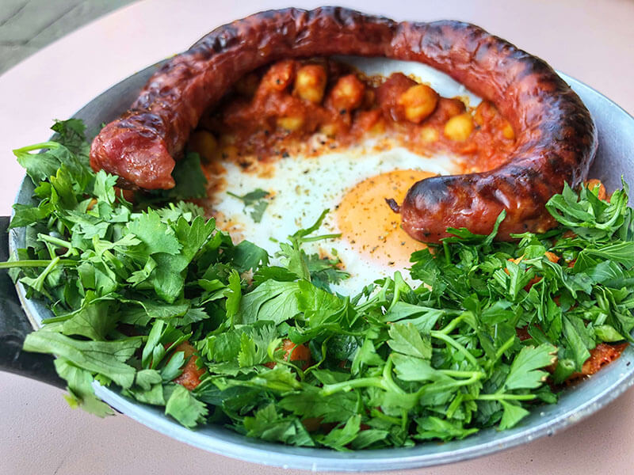
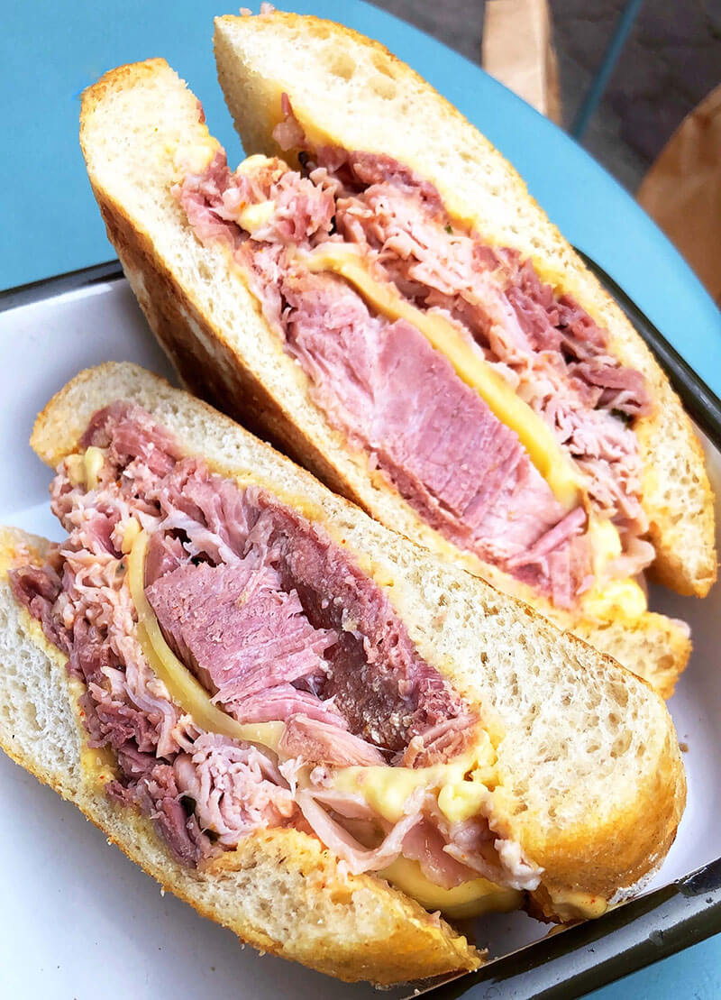
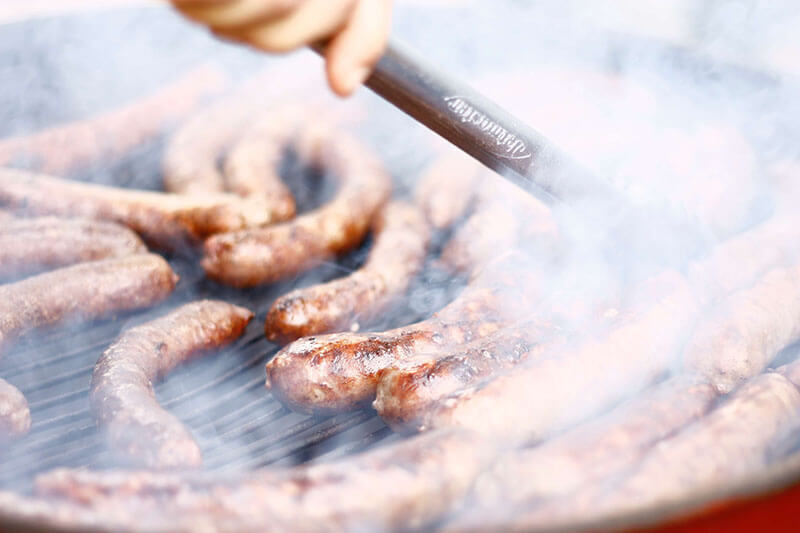
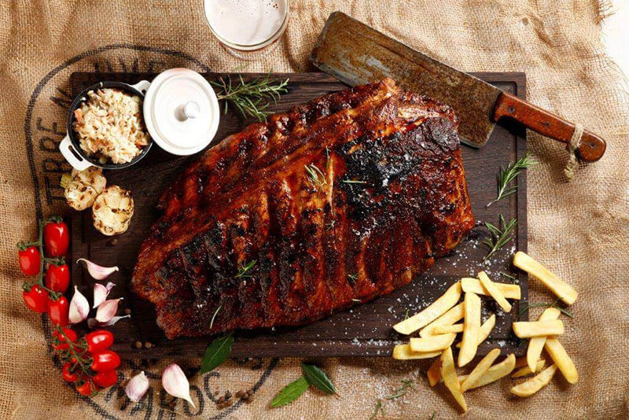
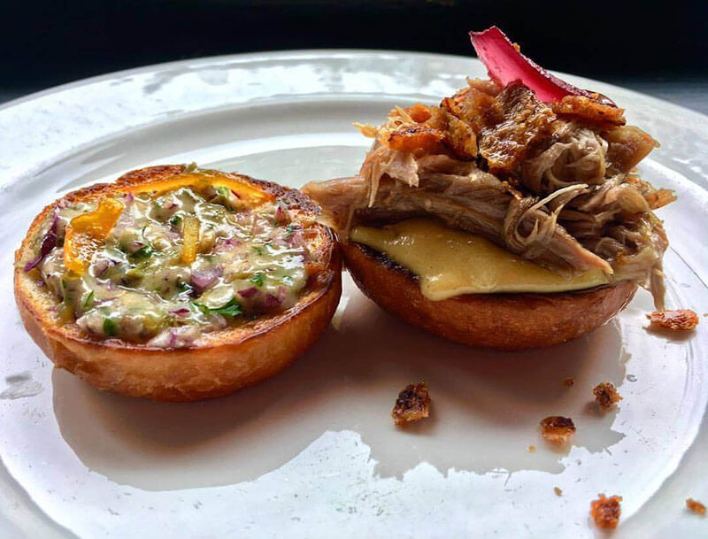

Table of Contents
1 Restaurants
1.1 Breakfast
1.1.1 Ranny Ptazek

If you’re looking for some great breakfast food near the city center, look no further than Ranny Ptaszek. Here, they serve up what locals consider some of the best breakfast in all of Krakow. Their massive helpings of Hungarian sausage and shakshuka, a dish made with poached eggs, vegetables, and tomato sauce, make for a phenomenal start to any day.
1.2 Lunch
1.2.1 Meat & Go

All their sandwiches are served with the best quality ingredients, and their large portions mean you’ll never finish eating still hungry.
1.2.2 Kielbaski z Nyski

While food trucks aren’t often featured on this blog, Kielbaski z Nyski has earned a spot here as one of the best restaurants in Krakow. They’ve grown famous for serving traditional Polish sausages. Each night, they grill up the sausages in a communist era van and serve them on paper plates to long lines of locals and travelers alike (so you know they must be as good as they look).
1.3 Dinner
1.3.1 Rzeznia

If you’re looking for one of the best restaurants in Krakow to chow down on grilled meat, Rzeznia should be your first choice. They’ve grown famous in Krakow for their rib platters, but they also serve some tasty chicken and even shrimp.
1.3.2 Karakter

While their menu includes a few common dishes, they’ve grown popular among Krakow restaurants because of their bold menu, which includes things like ostrich gizzards, homemade donuts filled with shredded duck, bone marrow with capers, and orange peel and crispy roasted duck skin.
1.3.3 Przystanek Pierogarnia
Since opening their doors in 2010, this restaurant has served the best pierogi Krakow has to offer. Stuffed with either sweet or savory fillings, the Polish dumplings here at Przystanek are served alongside either stewed onions or butter and sprinkled sugar.